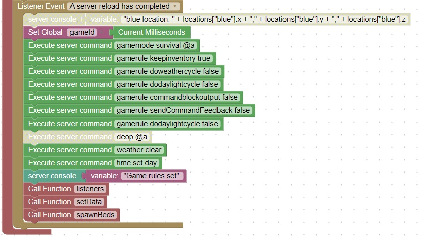

Reload considerations
The server reload is the event that drives the game initialization
Notice the global variable gameId is set to the current time in milliseconds
When a player joins the server their gameId will be checked, if it does not match this means that they are joining the game for the first time.
